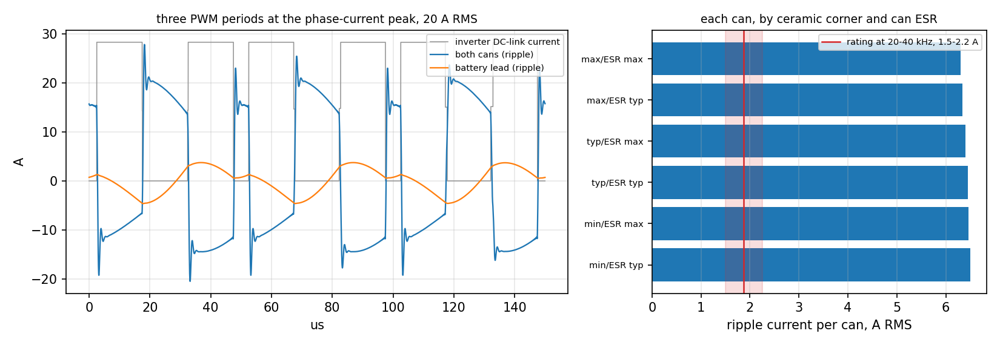
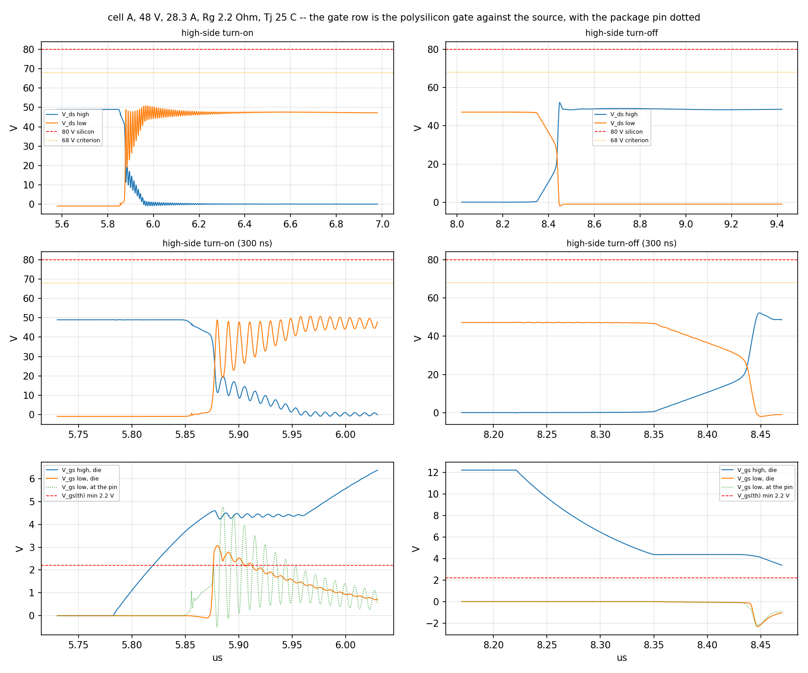
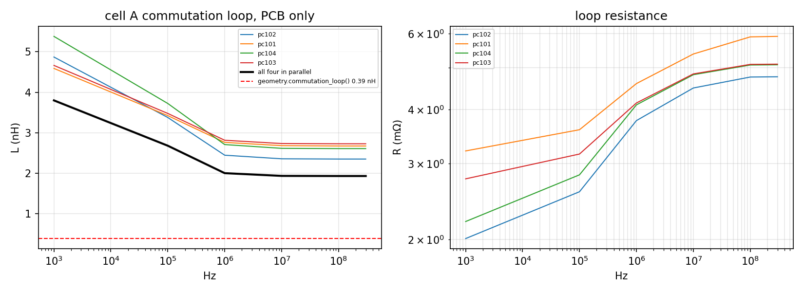
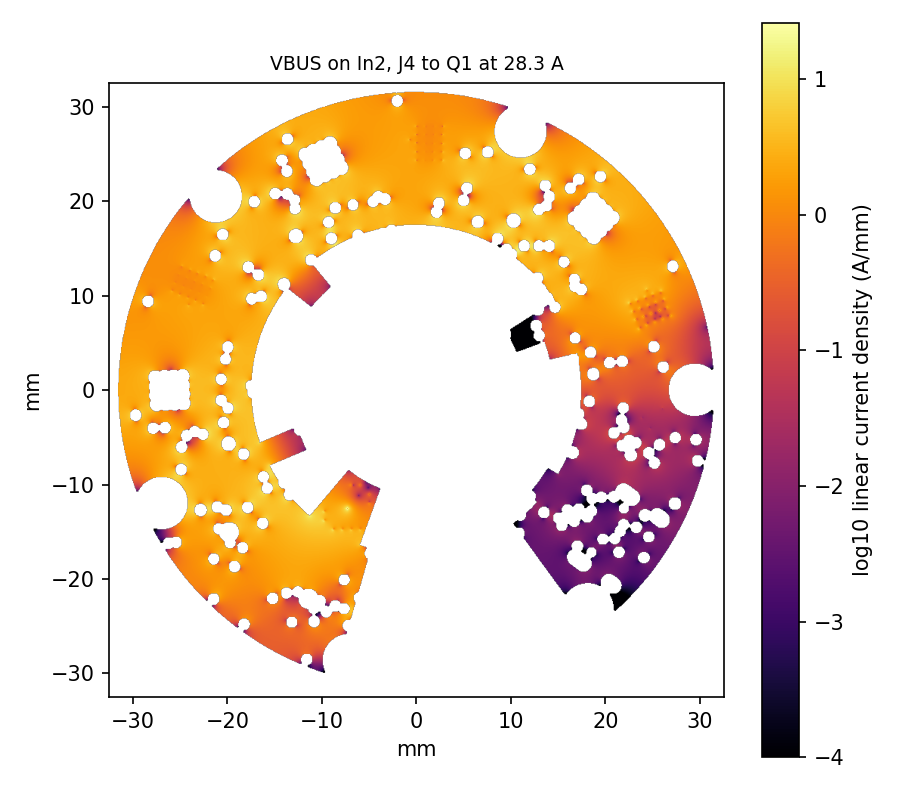
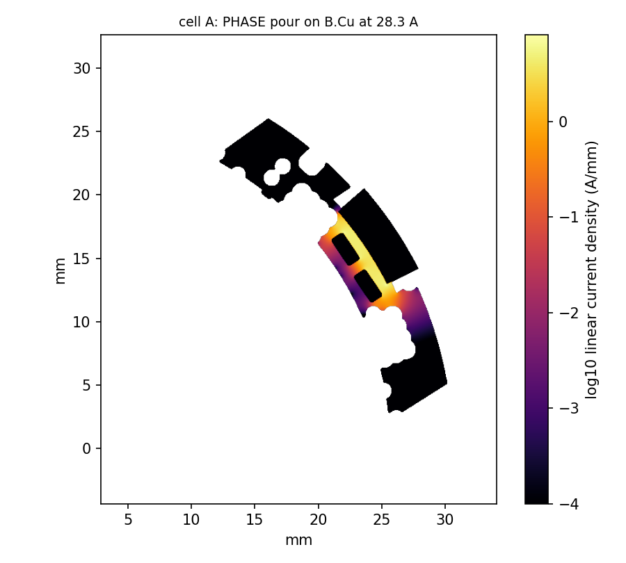
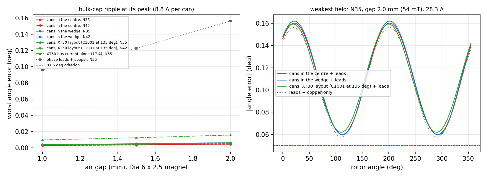
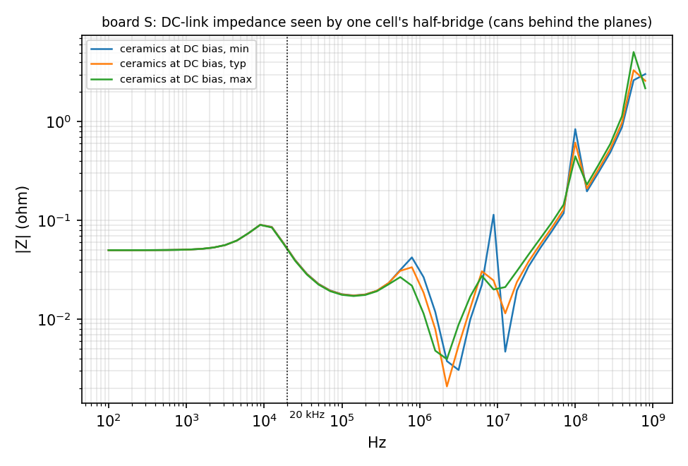
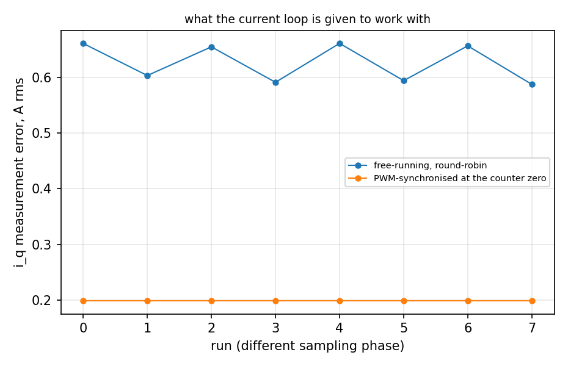
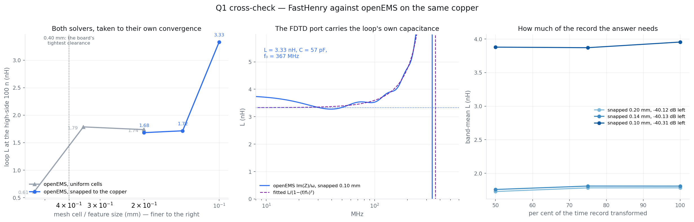

The dot puts a layer on top at full opacity; the box says whether it is drawn at all.
Keys: 1–9 pick a layer, s solo, a all, m mirror, 0 fit. Angles are measured from the +x axis, the way the section boundaries at 0/68/136/204/256/308° are.
Copper, layer by layer
Board S's six copper layers as routed, plotted out of the board file by
tools/plot_layers.py and stacked in register — the same viewer as board A's
on the project page. Pick a layer to bring it to the front;
drag to pan, scroll to zoom. The cursor reads out in millimetres and in radius and angle.
Rebuild after any routing change with
python3 tools/plot_layers.py --board s — route.py --board s runs it
at the end of every run.
The model loads when this part of the page is on screen.
The board in 3D
Board S as routed, every part that has a model standing on it, exported through KiCad's
own GLB exporter by tools/export_3d.py — the same viewer as board A's on the
project page. Drag to turn it over, right-drag to pan, scroll
to zoom. Hover a part for its reference, value and footprint; click it for the pane on the
right — what it is for, where it sits, how tall it stands, and the net on every pin.
Double-click or type a reference to fly to it. The edge view is the one for the motor-facing
centre, where everything has to stay under 1.5 mm for the standoffs; the bulk cans stand
in the outward centre.
Rebuild after any change to the board with python3 tools/export_3d.py --board s
— gen_boards.py --board s and route.py --board s run it with the
layer plots.
What the simulation says about this board
The project’s electromagnetic simulation, run on this board file: the commutation loop and gate loops in FastHenry, the switching edges and sense chain in ngspice, DC current flow on all six layers, the DC link and bulk as a network, the field at the encoder, the FOC loop with the ADC, and an openEMS cross-check of the loop. Design point: 48 V, 20 A RMS per phase (28.3 A peak), 20 kHz centre-aligned sine PWM at m = 0.8. Each row grades one question against the criterion the simulation spec (sim/SPEC.md) set for it.
| Question | This board | Criterion | Verdict |
|---|---|---|---|
| Commutation loop | 1.94 nH of PCB (FastHenry, all four capacitors); 3.1–3.2 nH with the two FET packages and the capacitors' ESL (its mesh series 2.29, 2.13, 1.99, 1.90, 1.91 nH, 0.4 % on the last step; the 0.62 mm mesh had not finished); cells A/B/C within 9 %; the full-wave check, one capacitor's loop, reads 1.68, 1.72, 3.33 nH as its mesh refines (0.2, 0.14, 0.1 mm) against FastHenry's 2.70 nH | reported; FastHenry and openEMS agree within 25 %, each converged | does not the full-wave mesh series did not settle; its number is not used |
| Switching overshoot | 52.2 V peak at 48 V and 28.3 A; 69.1 V at the worst corner swept (Rg, Tj, driver strength, capacitance); 60.2 V at 56 V, the top of the fold-back | Vds ≤ 57 V everywhere (the TPSMF4L54A's breakdown minimum is 60.0 V; the criterion keeps board A's 3 V margin under it); ringing under 5 % in 5 cycles | partly |
| Snubber | at the nominal edge, which passes without one (52.2 V), every RC from 2.2–22 Ω and 0.47–4.7 nF leaves the peak at 51.8–52.3 V: the overshoot there is too small for a snubber to matter. The sweep is not run at the strong-driver corner that reaches 69.1 V | the smallest RC that passes Q2 with PR ≤ 0.25 W | reported |
| Miller turn-on | 3.05 V induced on the off FET's gate at the nominal edge, 3.75 V at the worst corner, against a VGS(th) of 2.2 V minimum | induced Vgs ≤ 0.7 × VGS(th),min | does not |
| Current sense, transient | the INA241A3 holds its output 1000 ns after each edge (settles in 2318 ns, 35 LSB worst); a free-running ADC lands 12–14 % of samples in a hold, PWM-synchronised sampling none | settled to ±1 LSB in 500 ns; ≤ 6 % of samples disturbed | does not |
| Current sense, DC | copper is 2.9 % of the 1.030 mΩ between the taps; TCR -155 to 379 ppm/K with the shunt's ±275 ppm/K; the two shunts share 51/49 | copper ≤ 5 %; TCR ≤ 500 ppm/K; sharing within 10 % | meets it |
| Vias and copper at 20 A | busiest barrel 2.83 A RMS in the 16-via array that takes the phase current from the low-side drain down to the shunts, 2.06 A in the high side's 20-via drain array fed from the XT30; phase band 74 A/mm² (p99.9) | ≤ 2 A RMS per 0.4 mm barrel | does not |
| Bulk cans | 6.4 A RMS in each can at 20 A RMS per phase (1.43 W each), against 1.5–2.2 A of rating at 20–40 kHz: within rating up to about 4.7–7.0 A RMS per phase, continuous | each can within its ripple rating | does not |
| Bus ripple | 1.74 V peak-to-peak at the drains; 2.0 A RMS goes back up a 1 µH battery lead; the ceramics are 8.2 µF at 48 V of 13.8 nominal; the cans are about 2.0 nH of plane from cell A (FastHenry's series 2.9, 2.6, 2.0 nH is still moving; at 20–40 kHz any of them is under 1 mΩ) | Vbus,pp ≤ 3 V; no DC-link resonance with Q > 3 below 1 MHz | meets it |
| Encoder field | bulk cans 0.006° and the XT30's bus current 0.016° at the weakest field; with the motor leads 0.13° at the nominal gap, 0.16° at the weakest — the leads are nearly all of it | current-induced angle error ≤ 0.05° (about 2 LSB) | partly the board's own currents pass; the motor leads do not unless twisted |
| Magnet | Ø6 × 2.5 mm: 69 mT at the IC at the nominal 1.5 mm gap; inside the window for every grade and ±0.3 mm offset from 1.0 to 2.0 mm; over 100 mT at 0.5 mm and closer | 20–100 mT (MT6701) over the gap tolerance, 1–2 mm | meets it |
| ADC sampling | free-running round-robin: 0.63 A RMS error and 1.52 A bias on iq; sampled at the PWM counter's zero: 0.20 A and 0.73 A | synchronised sampling cuts disturbed samples to zero | reported |
| Dead time | the software dead_zone costs 0.62 % of torque on top of the EG2103's own 560 ns; pulses under 2.4 % duty never reach the FETs | reported, with a firmware setting | reported |
| Regeneration | a 20 A brake from rated speed (J 10−3 kg·m²) lifts 200 µF from 48 V to the 52 V fold-back in 47 µs and to the TVS in 141 µs; the bulk takes 0.13 J of the 21.9 J stored | reported: no brake chopper; the battery, when it accepts charge, is the sink | reported |
| Motor frame (common mode) | a floating frame swings 111 V peak on each edge through the winding capacitance | ≤ 10 V peak frame-to-GND | does not the enclosure has to bond the motor frame; the board cannot |
| Heat | 10.0 W on the board at 20 A RMS and 48 V; the high-side drain's 20-via array is 7.1 K/W; for Tj ≤ 125 °C the ring needs ≤ 7.4 K/W to air (about 90 cm²) | reported | reported |
| Radiated field | not quoted: a whole-board FDTD mesh cannot resolve 0.15 mm copper at an affordable cell count, so the far-field run does not converge | informational | reported |
{kind=link}

{kind=link}

{kind=link}

{kind=link}

{kind=link}

{kind=link}

{kind=link}

{kind=link}

{kind=link}

Phases run: P0, P1, P2, P3, P4, P5, P5S, P6, P7, P8; solver known-answer tests 13/13 passed. Results written 2026-09-24 15:33 from the board file of 2026-09-24 12:09; numbers and figures come only from sim/results/s/ and sim/report/img/s/. Rebuild with python3 sim/run.py --board s (about two hours; the full-wave cross-check is most of it). Board A’s own report is here.
The board at a glance
| Form | Ø65 mm round, 1.58 mm, six layers (2 oz outer, 1 oz inner). Parts on both faces. Bolts to the motor's rear face on 4 × M3 (NPTH, not a ground bond) at (±12.5, 0) and (0, ±9.5) mm; six M2.5 bosses at R 29.5 carry a heatsink ring or standoffs and bond GND to it. |
| Bus | 12–48 V operating, 48 V the maximum; the firmware folds the current limit back across 52→56 V. 80 V FETs. Clamps are the 54 V grade: SMDJ54A (3 kW) on the bus, TPSMF4L54A on each phase, both breaking down at 60.0–66.3 V. |
| Phase current | 20 A RMS per phase (28.3 A peak) in bursts. The continuous rating is set by heat and, on this board, by the bulk cans' ripple rating (simulation, above). |
| Power stage | Three half-bridges of BSC030N08NS5 (80 V, 3.0 mΩ max), 20 kHz centre-aligned PWM. EG2103 driver per phase: bootstrap high side, interlock, 560 ns internal dead time, 0.3/0.6 A; 2.2 Ω gate resistors, 10 k bleeds. DC link at the FETs: 2 × 2.2 µF/100 V X7S + 2 × 100 nF per cell. RC snubber footprints (2.2 Ω + 470 pF) on the board, not populated. |
| Bulk | 2 × 100 µF/100 V conductive polymer (NJCON 1011001013R00, Ø10 × 12, 35 mΩ, 2.5 A ripple at 100 kHz), in the middle of the outward face. |
| Current sense | Phases A and B inline: 2 × 2 mΩ (Vishay WSLP2010) = 1.0 mΩ into an INA241A3 at 50 V/V: 50 mV/A about 1.65 V, ±29.0 A at the amplifier's worst-case swing. Phase C carries a metal-strip 0 Ω so all three legs match; Ic = −(Ia + Ib). One shunt off per phase gives ±14.5 A at 100 mV/A. |
| Other sensing | Bus voltage (2 × 56 k over 4.7 k, 0.1 %: 1 : 24.8, 81.9 V full scale) on ADC2; FET temperature, a 10 k NTC (B 3380 K) in cell A, on ADC3; USB VBUS present on GPIO25. |
| Encoder | MT6701 on the shaft axis, motor-facing face; 14-bit angle over SSI on the same board. Ø6 × 2.5 mm diametric magnet at a 1.5 mm nominal gap; nothing taller than 1.5 mm in the motor-facing centre. |
| Controller | RP2350A (QFN-60) with its core buck, 12 MHz crystal and 16 Mbit flash, laid out after Raspberry Pi's RP-006440 reference design. |
| Interfaces | USB-C: USB 2.0 device and 5 V logic power, no PD. Two RS-485 ports (JST-SH 6), each a full-duplex point-to-point link; the CPU relays between them. 2 × 10, 1.27 mm expansion header for a stacked board. RGB LED, BOOTSEL, SWD pads. |
| Rails | +12 V gate drive and +5 V logic, each an LMR38010 buck from the bus at 400 kHz; +5 V also from USB through a Schottky OR; +3V3 from an SPX3819 LDO; +1V1 from the RP2350's own buck. |
Power tree
Start-up and reset
- The 12 V buck's enable is a divider from the bus (470 k over 68 k): it starts at 9.9 V (11.1 V worst case) and stops at 8.7 V. At a 12 V bus the buck runs near its maximum duty and the rail sits about 11.5 V, still above the EG2103's 9.7 V UVLO: 12 V is the floor.
GATE_OFF(GPIO14) is active high. A 2N7002 on the enable divider does the pulling, because the divider sees up to 8 V; high kills the gate rail. A 4.7 k pull-down holds it low through reset, so the rail stays up.- A reset brakes. HIN is pulled down and LIN is pulled down (4.7 k, strong enough for RP2350-E9); the EG2103's LIN is active low, so every low side conducts and the motor windings are shorted while the CPU is in reset.
- USB alone powers the logic (encoder, CPU, RS-485, configuration) but not the gate rail, so nothing can switch without the bus.
Protection
- Bus: SMDJ54A, 3 kW, 60.0–66.3 V breakdown, 87.1 V clamp at 34.4 A — under the FETs' 80 V for pulses to about 23 A. There is no brake chopper and no reverse-polarity protection: regen goes into the bulk, then the battery if it takes charge, then the TVS.
- Phases: TPSMF4L54A from each phase output to ground, beside the lead pad.
- Interfaces: SM712 on each RS-485 pair at its connector; USBLC6-2SC6 on USB D+/D− and VBUS.
- Firmware: the bus guard folds the current limit to zero across 52→56 V; the 60 V TVS breakdown is the hard stop above it.
Floorplan
Angles are from +x, counter-clockwise, looking at the outward face. The three phase cells take 0–204° of the rim (68° each, centred at 34, 102 and 170°): FETs, driver and DC-link ceramics on the outward face under a heatsink land at R 29.2–31.5; shunts, sense amplifier, phase pour and the motor-lead pad on the motor-facing face. The remaining 156° is three 52° wedges:
- Power wedge, 204–256° — the XT30 (set 5 mm in from the edge, mouth outward, its pins at R 14.5), the SMDJ54A under it, and both RS-485 ports on the motor-facing rim with their ESD.
- CPU wedge, 256–308° — the RP2350A, crystal, flash and core buck, as far from the switching as the board allows.
- Signal wedge, 308–360° — the USB-C at the rim, the two LMR38010 bucks (12 V on the motor-facing face, 5 V outward) and the USB ESD.
- Centre, outward face — the two bulk cans (12–13 mm tall), the expansion header across the shaft axis, the XT30's back end, LED, BOOTSEL, test pads and the bucks' 4.7 µF input caps.
- Centre, motor-facing face — the MT6701 on the axis inside a Ø12 magnet keepout; around it only parts under 1.5 mm, kept 3.75 mm from each M3 standoff: the four SIT3088 with their terminations, the 3V3 LDO, the bus and VBUS-detect dividers.
Connectors and pinouts
J4 · bus, AMASS XT30PW-M (horizontal)
| 1 | GND |
| 2 | VMOT, 12–48 V |
The rp2350-motor-controller's pinout, so one pack lead fits both. Rated 15 A continuous.
J14 RS-485 IN, J15 RS-485 OUT · JST-SH 6
| Pin | J14, from upstream | J15, to downstream |
|---|---|---|
| 1 | GND | GND |
| 2, 3 | DN A/B — received (U14, 120 Ω) | DN A/B — driven (U17) |
| 4, 5 | UP A/B — driven (U15) | UP A/B — received (U18, 120 Ω) |
| 6 | GND | GND |
Each pair has one driver and one receiver, so drivers are always enabled and each receiver is permanently terminated. A straight cable joins one drive's OUT to the next one's IN. Port IN is UART0 (GPIO0/1), port OUT a PIO UART (GPIO2/3); the CPU relays between them, so an unpowered drive breaks the chain below it. No bias network is needed: the SIT3088's receiver switches at −10 and −200 mV, so an idle, open or shorted line reads as idle with the 120 Ω across it (its datasheet's truth table). 14 Mbit/s maximum.
J12 · USB-C (HRO TYPE-C-31-M-12)
USB 2.0 full-speed device (27 Ω series, USBLC6 ESD); 5.1 k on each CC, so a 5 V sink only. VBUS feeds +5V through a B5819WS and is sensed on GPIO25 (10 k/15 k).
J13 · expansion, 2 × 10 at 1.27 mm
| Pin | Net | Pin | Net |
|---|---|---|---|
| 1 | VMOT | 2 | GND |
| 3 | VMOT | 4 | GND |
| 5 | VMOT | 6 | GND |
| 7 | VMOT | 8 | GND |
| 9 | +5V | 10 | GND |
| 11 | +3V3 | 12 | RUN |
| 13 | GPIO19 · INT | 14 | GPIO24 · RST |
| 15 | GPIO20 · I2C0 SDA / SPI0 RX | 16 | GPIO21 · I2C0 SCL / SPI0 CSn |
| 17 | GPIO22 · SPI0 SCK | 18 | GPIO23 · SPI0 TX |
| 19 | SWCLK | 20 | SWDIO |
For a stacked board: a USB-PD sink (e.g. FUSB302 on I2C0) that feeds VMOT through its own ideal diode, or Ethernet (e.g. W5500 on SPI0). The VMOT pins are paired with grounds so a PD board's current passes the encoder as a dipole; 3 A per pin.
Motor, programming, test
- J1–J3: phase A/B/C lead pads on the motor-facing rim at 34, 102 and 170°, for 14 AWG. Twist or bundle the three leads for their first 50 mm (encoder, above).
- SW1 BOOTSEL; TP5/TP6 SWCLK/SWDIO, TP7 RUN, TP4 ADC3 (FET temperature), all in the outward centre.
RP2350 pin map
| GPIO | Net | Use |
|---|---|---|
| 0, 1 | RS485_IN_TX, _RX | UART0, port IN |
| 2, 3 | RS485_OUT_TX, _RX | PIO UART, port OUT |
| 4–7 | ENC_SCK, ENC_CS, ENC_DO, ENC_OUT | MT6701 SSI clock, chip select, data, and its OUT pin. GPIO4 and 6 are SPI0's RX and SCK, the reverse of what SSI needs: read it with PIO (open items) |
| 8–13 | HIN_A, LIN_A, HIN_B, LIN_B, HIN_C, LIN_C | PWM slices 4, 5, 6; both channels of a slice at the same duty (the EG2103 inverts LIN) |
| 14 | GATE_OFF | high turns the 12 V gate rail off |
| 15 | FAULT_n | pulled up; nothing drives it on this board |
| 16–18 | LED_R, LED_G, LED_B | common-anode RGB, low is on |
| 19–24 | EXP_GP19–24 | expansion header |
| 25 | USB_VBUS_DET | USB power present (3.0 V at 5 V) |
| 26 / ADC0 | ISENSE_A | phase A current, 50 mV/A about 1.65 V |
| 27 / ADC1 | ISENSE_B | phase B current |
| 28 / ADC2 | VBUS_SENSE | bus voltage ÷ 24.8 |
| 29 / ADC3 | FET_TEMP | NTC divider, cell A |
Stackup and rules
| Layer | Copper | Use |
|---|---|---|
| F.Cu | 70 µm | FETs, drain and switch-node islands, DC-link caps, drivers, bulk, GND pour |
| prepreg 0.10 mm | ||
| In1.Cu | 35 µm | GND, solid |
| core 0.37 mm | ||
| In2.Cu | 35 µm | VBUS plane everywhere but the CPU wedge and centre disc, which are +3V3 |
| core 0.37 mm | ||
| In3.Cu | 35 µm | signals, GND fill |
| core 0.37 mm | ||
| In4.Cu | 35 µm | GND, solid |
| prepreg 0.10 mm | ||
| B.Cu | 70 µm | switch-node and phase pours, shunts, sense amplifiers, encoder, lead pads |
- 0.15 mm track and clearance; 0.40 mm on the bus-voltage nets
(
VBUS,SW_*,PHASE_*). - Vias 0.5/0.2 mm signal, 0.6/0.3 power, 0.8/0.4 phase; hole to hole 0.5 mm. Each FET drain pad has 16 × 0.4 mm vias; via-in-pad throughout, so it wants a filled and capped (POFV) six-layer process, e.g. JLCPCB's.
- The bus reaches the cells only through In2: the high-side drains by their via arrays, the DC-link caps by via-in-pad. The XT30's VMOT pin has 10 vias into an In2 tab and its GND pin 7; a VBUS spine on F.Cu joins it to the expansion header's VMOT pins.
- Board origin (KiCad 148, 105 mm) is the shaft axis and the MT6701's sensing centre.
Build status
| Parts on the board | 194 footprints (95 outward, 99 motor-facing): 186 placed parts, 10 of them DNP (the snubbers, and cell C's unused amplifier and sense taps), plus test pads and holes |
| Netlist | 190 components, 111 nets, 577 connections |
| Routing | 1913 track segments, 411 vias; 0 unconnected |
| Checks | DRC 0, ERC 0 (every severity) |
| Sourcing | every placed part has an LCSC number (hardware/parts/lcsc.csv), shown in the 3D viewer's part pane |
Counted off servodrive_S.kicad_pcb as saved 2026-09-24 12:09 by tools/regen.py, which route.py runs after every routing run.
python3 tools/schematic_s.py # netlist and its checks
python3 tools/gen_boards.py --board s --force # emit, stitch, fan out (discards routing)
python3 tools/route.py --board s --rounds 1 # then --polish, twice
python3 sim/run.py --board s # the simulation, into this pageOpen items
- The bulk cans at full current. The simulation puts about three times the cans' rated ripple through each at 20 A RMS per phase. Either the 20 A figure stays a short burst, or the bulk changes (more cans, higher-ripple parts, or more ceramic at the cells).
- Switching overshoot at the corners. At the fastest corners swept the low-side Vds reaches into the phase clamps' 60 V breakdown; the DNP snubber footprints are the fix if the bench shows it.
- Encoder pins. ENC_SCK is on GPIO4 and ENC_DO on GPIO6, which are SPI0's RX and SCK functions: hardware SPI0 cannot clock the MT6701 as wired. A PIO SSI reader works on any pins; swapping the two nets would let SPI0 do it. Board A has the same map.
- The XT30 is rated 15 A continuous; the design point's DC current is about 17 A. Fine for bursts.
- Motor frame. The M3 mounts are not a ground bond, so the frame floats unless the enclosure bonds it; the simulation shows tens of volts of common-mode swing on a floating frame.
- Motor leads. Untwisted, they move the encoder angle by about 0.12–0.16°, three times the criterion; twist or bundle them for the first 50 mm.
- The bucks' control loops use TI's table values for L and COUT; the effective capacitance at bias is estimated, and TI asks for a load-transient test before production. Neither inductor is rated to the LMR38010's 1.9 A current limit.
- Heights. The cans stand 12–13 mm on the outward face: a stacked expansion board needs longer standoffs or a cut-out. Motor-facing centre parts must be bought under 1.5 mm.
- Heatsink ring. The USB-C reaches the edge in the signal wedge, so a ring clamped on the lands needs a gap there. A few tracks and a via sit inside the M3 standoffs' circles on the motor-facing face.
- Stock to watch: SIT3088ETK (140 at JLCPCB on 2026-09-24, four per board), TPSMF4L54A (42, three per board). The RS-485 connectors are an SH-compatible part whose land pattern is unchecked; the RGB LED is placed rotated 180° to match its pads.
Parts board S adds or moves
Everything else is board A's, in the same place. R is the courtyard centre's radius from the shaft axis.
| Ref | Value | Where | R | Note |
|---|---|---|---|---|
| D1001 | SMDJ54A | power wedge, 230°, motor side | R 21.3 | bus TVS, 3 kW, 54 V standoff, 60-66 V breakdown; under the XT30, cathode toward its VMOT pin |
| D1101 | SM712 | power wedge, 230°, motor side | R 23.5 | RS-485 ESD, IN, DOWN pair, at the port |
| D1104 | SM712 | power wedge, 230°, motor side | R 23.5 | RS-485 ESD, OUT, DOWN pair, at the port |
| J14 | RS485 IN (upstream) | power wedge, 230°, motor side | R 28.7 | full-duplex RS-485, JST-SH 6, motor-facing rim, mouth outward |
| J15 | RS485 OUT (downstream) | power wedge, 230°, motor side | R 28.7 | a link of its own, relayed by the CPU |
| C1009 | 22u/25V | power wedge, 230°, outward | R 28.7 | +12 V out; beside the XT30 |
| D1102 | SM712 | power wedge, 230°, outward | R 23.4 | RS-485 ESD, IN, UP pair, at the port |
| D1105 | SM712 | power wedge, 230°, outward | R 23.5 | RS-485 ESD, OUT, UP pair, at the port |
| J4 | XT30 | power wedge, 230°, outward | R 20.1 | bus input, AMASS XT30PW-M as the rp2350-motor-controller's J9: pin 1 GND, pin 2 VMOT; mouth outward, 5.0 mm in from the edge |
| C1102 | 100n | centre, motor side | R 8.5 | U14 decoupling, at VCC |
| C1103 | 100n | centre, motor side | R 14.5 | U15 decoupling, at VCC |
| C1104 | 100n | centre, motor side | R 11.4 | U17 decoupling, at VCC |
| C1105 | 100n | centre, motor side | R 8.1 | U18 decoupling, at VCC |
| C712 | 1u | centre, motor side | R 14.7 | 3V3 out |
| C713 | 1u | centre, motor side | R 15.3 | 5 V in |
| C717 | 100n | centre, motor side | R 15.9 | RUN |
| C801 | 100n | centre, motor side | R 8.7 | ADC2 filter |
| C802 | 100n | centre, motor side | R 11.3 | ADC3 filter |
| R1103 | 10k | centre, motor side | R 13.3 | VBUS_DET divider, top |
| R1104 | 15k | centre, motor side | R 14.8 | VBUS_DET divider, bottom -> GPIO25 |
| R1105 | 120R | centre, motor side | R 11.9 | port IN DOWN pair termination, always on |
| R1106 | 120R | centre, motor side | R 7.7 | port OUT UP pair termination, always on |
| R704 | 10k | centre, motor side | R 15.3 | RUN pull-up |
| R705 | 10k | centre, motor side | R 14.4 | FAULT_n pull-up |
| R801 | 56k 0.1% | centre, motor side | R 13.5 | bus divider, high leg |
| R802 | 4k7 0.1% | centre, motor side | R 7.6 | bus divider, low leg |
| R803 | 10k 0.1% | centre, motor side | R 14.2 | thermistor divider -> ADC3 |
| R806 | 56k 0.1% | centre, motor side | R 10.6 | bus divider, high leg, second half |
| U14 | SIT3088 | centre, motor side | R 8.8 | port IN: receiver, DOWN pair -> UART0 RX |
| U15 | SIT3088 | centre, motor side | R 13.0 | port IN: driver, UP pair <- UART0 TX, DE on |
| U17 | SIT3088 | centre, motor side | R 14.1 | port OUT: driver, DOWN pair <- PIO TX, DE on |
| U18 | SIT3088 | centre, motor side | R 10.6 | port OUT: receiver, UP pair -> PIO RX |
| U9 | SPX3819-3.3 | centre, motor side | R 14.5 | 5 V -> 3V3 |
| C1001 | 100u/100V polymer | centre, outward | R 13.3 | bulk, C2887236, Dia 10 x 12, in the centre, + lead outward |
| C1002 | 100u/100V polymer | centre, outward | R 15.3 | bulk, C2887236, Dia 10 x 12, in the centre, + lead outward |
| C1004 | 4u7/100V | centre, outward | R 14.9 | +12 V buck input, 4.7 uF ceramic; in the outward centre, 11 mm from C1003 |
| C1007 | 4u7/100V | centre, outward | R 11.0 | +5 V buck input, 4.7 uF ceramic; in the outward centre, 17 mm from C1006 |
| D1103 | RGB | centre, outward | R 12.7 | status LED, three GPIO |
| J13 | EXPANSION | centre, outward | R 0.0 | 2x10 1.27 SMD: 4 VMOT, 5 GND, +5V, +3V3, RUN, GPIO19-24, SWCLK, SWDIO; across the axis, the MT6701's vias moved clear |
| R1107 | 1k | centre, outward | R 13.2 | LED series |
| R1108 | 1k | centre, outward | R 13.8 | LED series |
| R1109 | 1k | centre, outward | R 15.2 | LED series |
| SW1 | BOOTSEL | centre, outward | R 15.0 | BOOTSEL to GND, via R701 |
| TP4 | ADC3 | centre, outward | R 6.9 | test point, ADC3, outward face |
| TP5 | SWCLK | centre, outward | R 6.4 | test point, SWCLK, outward face |
| TP6 | SWDIO | centre, outward | R 8.4 | test point, SWDIO, outward face |
| TP7 | RUN | centre, outward | R 10.5 | test point, RUN, outward face |
| C1003 | 100n/100V | signal wedge, 334°, motor side | R 22.7 | +12 V buck input, HF, at VIN/GND |
| C1005 | 100n | signal wedge, 334°, motor side | R 29.1 | +12 V bootstrap, BOOT to SW |
| C1011 | 22u/25V | signal wedge, 334°, motor side | R 19.1 | +5 V out |
| C603 | 22u/25V | signal wedge, 334°, motor side | R 19.7 | +12 V out |
| D1002 | B5819WS | signal wedge, 334°, motor side | R 20.3 | USB VBUS -> +5V |
| D1003 | B5819WS | signal wedge, 334°, motor side | R 29.5 | 5 V buck -> +5V, so USB cannot back-feed the rails |
| L1001 | 68u | signal wedge, 334°, motor side | R 21.7 | +12 V buck inductor, SWPA4030S680MT |
| Q1001 | 2N7002 | signal wedge, 334°, motor side | R 28.4 | GATE_OFF high pulls EN low: kills the gate rail |
| R1001 | 100k | signal wedge, 334°, motor side | R 30.5 | +12 V feedback, top |
| R1002 | 9k09 | signal wedge, 334°, motor side | R 30.4 | +12 V feedback, bottom |
| R1003 | 470k | signal wedge, 334°, motor side | R 22.2 | EN from VMOT: UVLO, on unless pulled down |
| R1004 | 68k | signal wedge, 334°, motor side | R 20.3 | EN divider, bottom: 9.9 V start |
| R1005 | 4k7 | signal wedge, 334°, motor side | R 27.0 | GATE_OFF pull-down: the rail is ON through reset, so a reset brakes; 4k7 clears E9 |
| R1008 | 64k9 | signal wedge, 334°, motor side | R 27.3 | +12 V RT: 400 kHz |
| R1101 | 5k1 | signal wedge, 334°, motor side | R 21.4 | CC1 pull-down: a sink, 5 V only |
| R1102 | 5k1 | signal wedge, 334°, motor side | R 22.2 | CC2 pull-down |
| U11 | LMR38010SDDAR | signal wedge, 334°, motor side | R 26.5 | +12 V rail, EN on a VMOT divider, GATE_OFF pulls it down |
| U13 | USBLC6-2SC6 | signal wedge, 334°, motor side | R 23.9 | USB ESD, as close to the connector as the wedge allows |
| C1006 | 100n/100V | signal wedge, 334°, outward | R 26.7 | +5 V buck input, HF, at VIN/GND |
| C1008 | 100n | signal wedge, 334°, outward | R 20.2 | +5 V bootstrap, BOOT to SW |
| C1010 | 22u/25V | signal wedge, 334°, outward | R 19.3 | +5 V out |
| C604 | 22u/25V | signal wedge, 334°, outward | R 29.4 | +5 V out |
| J12 | USB-C | signal wedge, 334°, outward | R 27.2 | USB 2.0 data + 5 V logic, no PD; HRO TYPE-C-31-M-12 |
| L1002 | 33u | signal wedge, 334°, outward | R 27.0 | +5 V buck inductor, SWPA4030S330MT |
| R1006 | 100k | signal wedge, 334°, outward | R 18.7 | +5 V feedback, top |
| R1007 | 24k9 | signal wedge, 334°, outward | R 18.3 | +5 V feedback, bottom |
| R1009 | 64k9 | signal wedge, 334°, outward | R 22.3 | +5 V RT: 400 kHz |
| U12 | LMR38010SDDAR | signal wedge, 334°, outward | R 22.4 | +5 V rail, logic; EN tied to VIN |